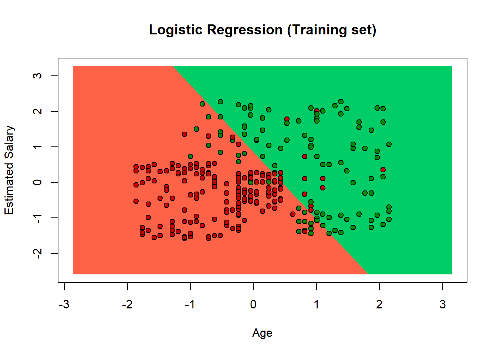
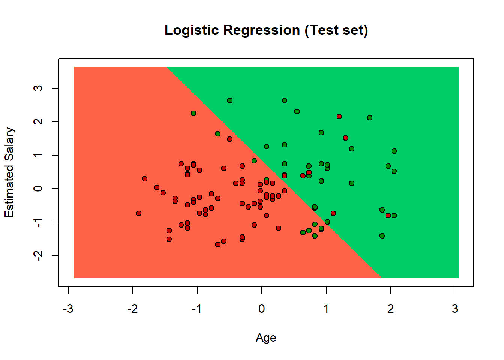

3.1 Logistic Regression
3.1.1 Importing the libraries
Python
import numpy as np
import matplotlib.pyplot as plt
import pandas as pd3.1.2 Importing the dataset
Python
dataset = pd.read_csv('Social_Network_Ads.csv')
X = dataset.iloc[:, :-1].values
y = dataset.iloc[:, -1].valuesR
dataset = read.csv('Social_Network_Ads.csv')
# dataset = dataset[3:5]3.1.3 Encoding the target feature as factor
R
dataset$Purchased = factor(dataset$Purchased, levels = c(0, 1))3.1.4 Splitting the dataset into the Training set and Test set
Python
from sklearn.model_selection import train_test_split
X_train, X_test, y_train, y_test = train_test_split(X, y, test_size = 0.25, random_state = 0)
print(X_train)
## [[ 44 39000]
## [ 32 120000]
## [ 38 50000]
## [ 32 135000]
## [ 52 21000]
## [ 53 104000]
## [ 39 42000]
## [ 38 61000]
## [ 36 50000]
## [ 36 63000]
## [ 35 25000]
## [ 35 50000]
## [ 42 73000]
## [ 47 49000]
## [ 59 29000]
## [ 49 65000]
## [ 45 131000]
## [ 31 89000]
## [ 46 82000]
## [ 47 51000]
## [ 26 15000]
## [ 60 102000]
## [ 38 112000]
## [ 40 107000]
## [ 42 53000]
## [ 35 59000]
## [ 48 41000]
## [ 48 134000]
## [ 38 113000]
## [ 29 148000]
## [ 26 15000]
## [ 60 42000]
## [ 24 19000]
## [ 42 149000]
## [ 46 96000]
## [ 28 59000]
## [ 39 96000]
## [ 28 89000]
## [ 41 72000]
## [ 45 26000]
## [ 33 69000]
## [ 20 82000]
## [ 31 74000]
## [ 42 80000]
## [ 35 72000]
## [ 33 149000]
## [ 40 71000]
## [ 51 146000]
## [ 46 79000]
## [ 35 75000]
## [ 38 51000]
## [ 36 75000]
## [ 37 78000]
## [ 38 61000]
## [ 60 108000]
## [ 20 82000]
## [ 57 74000]
## [ 42 65000]
## [ 26 80000]
## [ 46 117000]
## [ 35 61000]
## [ 21 68000]
## [ 28 44000]
## [ 41 87000]
## [ 37 33000]
## [ 27 90000]
## [ 39 42000]
## [ 28 123000]
## [ 31 118000]
## [ 25 87000]
## [ 35 71000]
## [ 37 70000]
## [ 35 39000]
## [ 47 23000]
## [ 35 147000]
## [ 48 138000]
## [ 26 86000]
## [ 25 79000]
## [ 52 138000]
## [ 51 23000]
## [ 35 60000]
## [ 33 113000]
## [ 30 107000]
## [ 48 33000]
## [ 41 80000]
## [ 48 96000]
## [ 31 18000]
## [ 31 71000]
## [ 43 129000]
## [ 59 76000]
## [ 18 44000]
## [ 36 118000]
## [ 42 90000]
## [ 47 30000]
## [ 26 43000]
## [ 40 78000]
## [ 46 59000]
## [ 59 42000]
## [ 46 74000]
## [ 35 91000]
## [ 28 59000]
## [ 40 57000]
## [ 59 143000]
## [ 57 26000]
## [ 52 38000]
## [ 47 113000]
## [ 53 143000]
## [ 35 27000]
## [ 58 101000]
## [ 45 45000]
## [ 23 82000]
## [ 46 23000]
## [ 42 65000]
## [ 28 84000]
## [ 38 59000]
## [ 26 84000]
## [ 29 28000]
## [ 37 71000]
## [ 22 55000]
## [ 48 35000]
## [ 49 28000]
## [ 38 65000]
## [ 27 17000]
## [ 46 28000]
## [ 48 141000]
## [ 26 17000]
## [ 35 97000]
## [ 39 59000]
## [ 24 27000]
## [ 32 18000]
## [ 46 88000]
## [ 35 58000]
## [ 56 60000]
## [ 47 34000]
## [ 40 72000]
## [ 32 100000]
## [ 19 21000]
## [ 25 90000]
## [ 35 88000]
## [ 28 32000]
## [ 50 20000]
## [ 40 59000]
## [ 50 44000]
## [ 35 72000]
## [ 40 142000]
## [ 46 32000]
## [ 39 71000]
## [ 20 74000]
## [ 29 75000]
## [ 31 76000]
## [ 47 25000]
## [ 40 61000]
## [ 34 112000]
## [ 38 80000]
## [ 42 75000]
## [ 47 47000]
## [ 39 75000]
## [ 19 25000]
## [ 37 80000]
## [ 36 60000]
## [ 41 52000]
## [ 36 125000]
## [ 48 29000]
## [ 36 126000]
## [ 51 134000]
## [ 27 57000]
## [ 38 71000]
## [ 39 61000]
## [ 22 27000]
## [ 33 60000]
## [ 48 74000]
## [ 58 23000]
## [ 53 72000]
## [ 32 117000]
## [ 54 70000]
## [ 30 80000]
## [ 58 95000]
## [ 26 52000]
## [ 45 79000]
## [ 24 55000]
## [ 40 75000]
## [ 33 28000]
## [ 44 139000]
## [ 22 18000]
## [ 33 51000]
## [ 43 133000]
## [ 24 32000]
## [ 46 22000]
## [ 35 55000]
## [ 54 104000]
## [ 48 119000]
## [ 35 53000]
## [ 37 144000]
## [ 23 66000]
## [ 37 137000]
## [ 31 58000]
## [ 33 41000]
## [ 45 22000]
## [ 30 15000]
## [ 19 19000]
## [ 49 74000]
## [ 39 122000]
## [ 35 73000]
## [ 39 71000]
## [ 24 23000]
## [ 41 72000]
## [ 29 83000]
## [ 54 26000]
## [ 35 44000]
## [ 37 75000]
## [ 29 47000]
## [ 31 68000]
## [ 42 54000]
## [ 30 135000]
## [ 52 114000]
## [ 50 36000]
## [ 56 133000]
## [ 29 61000]
## [ 30 89000]
## [ 26 16000]
## [ 33 31000]
## [ 41 72000]
## [ 36 33000]
## [ 55 125000]
## [ 48 131000]
## [ 41 71000]
## [ 30 62000]
## [ 37 72000]
## [ 41 63000]
## [ 58 47000]
## [ 30 116000]
## [ 20 49000]
## [ 37 74000]
## [ 41 59000]
## [ 49 89000]
## [ 28 79000]
## [ 53 82000]
## [ 40 57000]
## [ 60 34000]
## [ 35 108000]
## [ 21 72000]
## [ 38 71000]
## [ 39 106000]
## [ 37 57000]
## [ 26 72000]
## [ 35 23000]
## [ 54 108000]
## [ 30 17000]
## [ 39 134000]
## [ 29 43000]
## [ 33 43000]
## [ 35 38000]
## [ 41 45000]
## [ 41 72000]
## [ 39 134000]
## [ 27 137000]
## [ 21 16000]
## [ 26 32000]
## [ 31 66000]
## [ 39 73000]
## [ 41 79000]
## [ 47 50000]
## [ 41 30000]
## [ 37 93000]
## [ 60 46000]
## [ 25 22000]
## [ 28 37000]
## [ 38 55000]
## [ 36 54000]
## [ 20 36000]
## [ 56 104000]
## [ 40 57000]
## [ 42 108000]
## [ 20 23000]
## [ 40 65000]
## [ 47 20000]
## [ 18 86000]
## [ 35 79000]
## [ 57 33000]
## [ 34 72000]
## [ 49 39000]
## [ 27 31000]
## [ 19 70000]
## [ 39 79000]
## [ 26 81000]
## [ 25 80000]
## [ 28 85000]
## [ 55 39000]
## [ 50 88000]
## [ 49 88000]
## [ 52 150000]
## [ 35 65000]
## [ 42 54000]
## [ 34 43000]
## [ 37 52000]
## [ 48 30000]
## [ 29 43000]
## [ 36 52000]
## [ 27 54000]
## [ 26 118000]]
print(y_train)
## [0 1 0 1 1 1 0 0 0 0 0 0 1 1 1 0 1 0 0 1 0 1 0 1 0 0 1 1 1 1 0 1 0 1 0 0 1
## 0 0 1 0 0 0 0 0 1 1 1 1 0 0 0 1 0 1 0 1 0 0 1 0 0 0 1 0 0 0 1 1 0 0 1 0 1
## 1 1 0 0 1 1 0 0 1 1 0 1 0 0 1 1 0 1 1 1 0 0 0 0 0 1 0 0 1 1 1 1 1 0 1 1 0
## 1 0 0 0 0 0 0 0 1 1 0 0 1 0 0 1 0 0 0 1 0 1 1 0 1 0 0 0 0 1 0 0 0 1 1 0 0
## 0 0 1 0 1 0 0 0 1 0 0 0 0 1 1 1 0 0 0 0 0 0 1 1 1 1 1 0 1 0 0 0 0 0 1 0 0
## 0 0 0 0 1 1 0 1 0 1 0 0 1 0 0 0 1 0 0 0 0 0 1 0 0 0 0 0 1 0 1 1 0 0 0 0 0
## 0 1 1 0 0 0 0 1 0 0 0 0 1 0 1 0 1 0 0 0 1 0 0 0 1 0 1 0 0 0 0 0 1 1 0 0 0
## 0 0 1 0 1 1 0 0 0 0 0 1 0 1 0 0 1 0 0 1 0 1 0 0 0 0 0 0 1 1 1 1 0 0 0 0 1
## 0 0 0 0]
print(X_test)
## [[ 30 87000]
## [ 38 50000]
## [ 35 75000]
## [ 30 79000]
## [ 35 50000]
## [ 27 20000]
## [ 31 15000]
## [ 36 144000]
## [ 18 68000]
## [ 47 43000]
## [ 30 49000]
## [ 28 55000]
## [ 37 55000]
## [ 39 77000]
## [ 20 86000]
## [ 32 117000]
## [ 37 77000]
## [ 19 85000]
## [ 55 130000]
## [ 35 22000]
## [ 35 47000]
## [ 47 144000]
## [ 41 51000]
## [ 47 105000]
## [ 23 28000]
## [ 49 141000]
## [ 28 87000]
## [ 29 80000]
## [ 37 62000]
## [ 32 86000]
## [ 21 88000]
## [ 37 79000]
## [ 57 60000]
## [ 37 53000]
## [ 24 58000]
## [ 18 52000]
## [ 22 81000]
## [ 34 43000]
## [ 31 34000]
## [ 49 36000]
## [ 27 88000]
## [ 41 52000]
## [ 27 84000]
## [ 35 20000]
## [ 43 112000]
## [ 27 58000]
## [ 37 80000]
## [ 52 90000]
## [ 26 30000]
## [ 49 86000]
## [ 57 122000]
## [ 34 25000]
## [ 35 57000]
## [ 34 115000]
## [ 59 88000]
## [ 45 32000]
## [ 29 83000]
## [ 26 80000]
## [ 49 28000]
## [ 23 20000]
## [ 32 18000]
## [ 60 42000]
## [ 19 76000]
## [ 36 99000]
## [ 19 26000]
## [ 60 83000]
## [ 24 89000]
## [ 27 58000]
## [ 40 47000]
## [ 42 70000]
## [ 32 150000]
## [ 35 77000]
## [ 22 63000]
## [ 45 22000]
## [ 27 89000]
## [ 18 82000]
## [ 42 79000]
## [ 40 60000]
## [ 53 34000]
## [ 47 107000]
## [ 58 144000]
## [ 59 83000]
## [ 24 55000]
## [ 26 35000]
## [ 58 38000]
## [ 42 80000]
## [ 40 75000]
## [ 59 130000]
## [ 46 41000]
## [ 41 60000]
## [ 42 64000]
## [ 37 146000]
## [ 23 48000]
## [ 25 33000]
## [ 24 84000]
## [ 27 96000]
## [ 23 63000]
## [ 48 33000]
## [ 48 90000]
## [ 42 104000]]
print(y_test)
## [0 0 0 0 0 0 0 1 0 0 0 0 0 0 0 0 0 0 1 0 0 1 0 1 0 1 0 0 0 0 0 1 1 0 0 0 0
## 0 0 1 0 0 0 0 1 0 0 1 0 1 1 0 0 0 1 1 0 0 1 0 0 1 0 1 0 1 0 0 0 0 1 0 0 1
## 0 0 0 0 1 1 1 0 0 0 1 1 0 1 1 0 0 1 0 0 0 1 0 1 1 1]R
# install.packages('caTools')
library(caTools)
set.seed(123)
split = sample.split(dataset$Purchased, SplitRatio = 0.75)
training_set = subset(dataset, split == TRUE)
test_set = subset(dataset, split == FALSE)3.1.5 Feature Scaling
Python
from sklearn.preprocessing import StandardScaler
sc = StandardScaler()
X_train = sc.fit_transform(X_train)
X_test = sc.transform(X_test)
print(X_train)
## [[ 0.58 -0.89]
## [-0.61 1.46]
## [-0.01 -0.57]
## [-0.61 1.9 ]
## [ 1.37 -1.41]
## [ 1.47 1. ]
## [ 0.09 -0.8 ]
## [-0.01 -0.25]
## [-0.21 -0.57]
## [-0.21 -0.19]
## [-0.31 -1.29]
## [-0.31 -0.57]
## [ 0.38 0.1 ]
## [ 0.88 -0.6 ]
## [ 2.07 -1.18]
## [ 1.08 -0.13]
## [ 0.68 1.78]
## [-0.71 0.56]
## [ 0.78 0.36]
## [ 0.88 -0.54]
## [-1.2 -1.58]
## [ 2.17 0.94]
## [-0.01 1.23]
## [ 0.19 1.08]
## [ 0.38 -0.48]
## [-0.31 -0.31]
## [ 0.98 -0.83]
## [ 0.98 1.87]
## [-0.01 1.26]
## [-0.9 2.27]
## [-1.2 -1.58]
## [ 2.17 -0.8 ]
## [-1.4 -1.47]
## [ 0.38 2.3 ]
## [ 0.78 0.77]
## [-1. -0.31]
## [ 0.09 0.77]
## [-1. 0.56]
## [ 0.28 0.07]
## [ 0.68 -1.26]
## [-0.51 -0.02]
## [-1.8 0.36]
## [-0.71 0.13]
## [ 0.38 0.3 ]
## [-0.31 0.07]
## [-0.51 2.3 ]
## [ 0.19 0.04]
## [ 1.27 2.22]
## [ 0.78 0.27]
## [-0.31 0.16]
## [-0.01 -0.54]
## [-0.21 0.16]
## [-0.11 0.24]
## [-0.01 -0.25]
## [ 2.17 1.11]
## [-1.8 0.36]
## [ 1.87 0.13]
## [ 0.38 -0.13]
## [-1.2 0.3 ]
## [ 0.78 1.37]
## [-0.31 -0.25]
## [-1.7 -0.05]
## [-1. -0.74]
## [ 0.28 0.5 ]
## [-0.11 -1.06]
## [-1.1 0.59]
## [ 0.09 -0.8 ]
## [-1. 1.55]
## [-0.71 1.4 ]
## [-1.3 0.5 ]
## [-0.31 0.04]
## [-0.11 0.01]
## [-0.31 -0.89]
## [ 0.88 -1.35]
## [-0.31 2.24]
## [ 0.98 1.98]
## [-1.2 0.48]
## [-1.3 0.27]
## [ 1.37 1.98]
## [ 1.27 -1.35]
## [-0.31 -0.28]
## [-0.51 1.26]
## [-0.8 1.08]
## [ 0.98 -1.06]
## [ 0.28 0.3 ]
## [ 0.98 0.77]
## [-0.71 -1.5 ]
## [-0.71 0.04]
## [ 0.48 1.72]
## [ 2.07 0.19]
## [-1.99 -0.74]
## [-0.21 1.4 ]
## [ 0.38 0.59]
## [ 0.88 -1.15]
## [-1.2 -0.77]
## [ 0.19 0.24]
## [ 0.78 -0.31]
## [ 2.07 -0.8 ]
## [ 0.78 0.13]
## [-0.31 0.62]
## [-1. -0.31]
## [ 0.19 -0.36]
## [ 2.07 2.13]
## [ 1.87 -1.26]
## [ 1.37 -0.92]
## [ 0.88 1.26]
## [ 1.47 2.13]
## [-0.31 -1.23]
## [ 1.97 0.91]
## [ 0.68 -0.71]
## [-1.5 0.36]
## [ 0.78 -1.35]
## [ 0.38 -0.13]
## [-1. 0.42]
## [-0.01 -0.31]
## [-1.2 0.42]
## [-0.9 -1.21]
## [-0.11 0.04]
## [-1.6 -0.42]
## [ 0.98 -1. ]
## [ 1.08 -1.21]
## [-0.01 -0.13]
## [-1.1 -1.52]
## [ 0.78 -1.21]
## [ 0.98 2.07]
## [-1.2 -1.52]
## [-0.31 0.79]
## [ 0.09 -0.31]
## [-1.4 -1.23]
## [-0.61 -1.5 ]
## [ 0.78 0.53]
## [-0.31 -0.34]
## [ 1.77 -0.28]
## [ 0.88 -1.03]
## [ 0.19 0.07]
## [-0.61 0.88]
## [-1.89 -1.41]
## [-1.3 0.59]
## [-0.31 0.53]
## [-1. -1.09]
## [ 1.18 -1.44]
## [ 0.19 -0.31]
## [ 1.18 -0.74]
## [-0.31 0.07]
## [ 0.19 2.1 ]
## [ 0.78 -1.09]
## [ 0.09 0.04]
## [-1.8 0.13]
## [-0.9 0.16]
## [-0.71 0.19]
## [ 0.88 -1.29]
## [ 0.19 -0.25]
## [-0.41 1.23]
## [-0.01 0.3 ]
## [ 0.38 0.16]
## [ 0.88 -0.65]
## [ 0.09 0.16]
## [-1.89 -1.29]
## [-0.11 0.3 ]
## [-0.21 -0.28]
## [ 0.28 -0.51]
## [-0.21 1.61]
## [ 0.98 -1.18]
## [-0.21 1.64]
## [ 1.27 1.87]
## [-1.1 -0.36]
## [-0.01 0.04]
## [ 0.09 -0.25]
## [-1.6 -1.23]
## [-0.51 -0.28]
## [ 0.98 0.13]
## [ 1.97 -1.35]
## [ 1.47 0.07]
## [-0.61 1.37]
## [ 1.57 0.01]
## [-0.8 0.3 ]
## [ 1.97 0.74]
## [-1.2 -0.51]
## [ 0.68 0.27]
## [-1.4 -0.42]
## [ 0.19 0.16]
## [-0.51 -1.21]
## [ 0.58 2.01]
## [-1.6 -1.5 ]
## [-0.51 -0.54]
## [ 0.48 1.84]
## [-1.4 -1.09]
## [ 0.78 -1.38]
## [-0.31 -0.42]
## [ 1.57 1. ]
## [ 0.98 1.43]
## [-0.31 -0.48]
## [-0.11 2.16]
## [-1.5 -0.1 ]
## [-0.11 1.95]
## [-0.71 -0.34]
## [-0.51 -0.83]
## [ 0.68 -1.38]
## [-0.8 -1.58]
## [-1.89 -1.47]
## [ 1.08 0.13]
## [ 0.09 1.52]
## [-0.31 0.1 ]
## [ 0.09 0.04]
## [-1.4 -1.35]
## [ 0.28 0.07]
## [-0.9 0.39]
## [ 1.57 -1.26]
## [-0.31 -0.74]
## [-0.11 0.16]
## [-0.9 -0.65]
## [-0.71 -0.05]
## [ 0.38 -0.45]
## [-0.8 1.9 ]
## [ 1.37 1.29]
## [ 1.18 -0.97]
## [ 1.77 1.84]
## [-0.9 -0.25]
## [-0.8 0.56]
## [-1.2 -1.55]
## [-0.51 -1.12]
## [ 0.28 0.07]
## [-0.21 -1.06]
## [ 1.67 1.61]
## [ 0.98 1.78]
## [ 0.28 0.04]
## [-0.8 -0.22]
## [-0.11 0.07]
## [ 0.28 -0.19]
## [ 1.97 -0.65]
## [-0.8 1.35]
## [-1.8 -0.6 ]
## [-0.11 0.13]
## [ 0.28 -0.31]
## [ 1.08 0.56]
## [-1. 0.27]
## [ 1.47 0.36]
## [ 0.19 -0.36]
## [ 2.17 -1.03]
## [-0.31 1.11]
## [-1.7 0.07]
## [-0.01 0.04]
## [ 0.09 1.06]
## [-0.11 -0.36]
## [-1.2 0.07]
## [-0.31 -1.35]
## [ 1.57 1.11]
## [-0.8 -1.52]
## [ 0.09 1.87]
## [-0.9 -0.77]
## [-0.51 -0.77]
## [-0.31 -0.92]
## [ 0.28 -0.71]
## [ 0.28 0.07]
## [ 0.09 1.87]
## [-1.1 1.95]
## [-1.7 -1.55]
## [-1.2 -1.09]
## [-0.71 -0.1 ]
## [ 0.09 0.1 ]
## [ 0.28 0.27]
## [ 0.88 -0.57]
## [ 0.28 -1.15]
## [-0.11 0.68]
## [ 2.17 -0.68]
## [-1.3 -1.38]
## [-1. -0.94]
## [-0.01 -0.42]
## [-0.21 -0.45]
## [-1.8 -0.97]
## [ 1.77 1. ]
## [ 0.19 -0.36]
## [ 0.38 1.11]
## [-1.8 -1.35]
## [ 0.19 -0.13]
## [ 0.88 -1.44]
## [-1.99 0.48]
## [-0.31 0.27]
## [ 1.87 -1.06]
## [-0.41 0.07]
## [ 1.08 -0.89]
## [-1.1 -1.12]
## [-1.89 0.01]
## [ 0.09 0.27]
## [-1.2 0.33]
## [-1.3 0.3 ]
## [-1. 0.45]
## [ 1.67 -0.89]
## [ 1.18 0.53]
## [ 1.08 0.53]
## [ 1.37 2.33]
## [-0.31 -0.13]
## [ 0.38 -0.45]
## [-0.41 -0.77]
## [-0.11 -0.51]
## [ 0.98 -1.15]
## [-0.9 -0.77]
## [-0.21 -0.51]
## [-1.1 -0.45]
## [-1.2 1.4 ]]
print(X_test)
## [[-0.8 0.5 ]
## [-0.01 -0.57]
## [-0.31 0.16]
## [-0.8 0.27]
## [-0.31 -0.57]
## [-1.1 -1.44]
## [-0.71 -1.58]
## [-0.21 2.16]
## [-1.99 -0.05]
## [ 0.88 -0.77]
## [-0.8 -0.6 ]
## [-1. -0.42]
## [-0.11 -0.42]
## [ 0.09 0.22]
## [-1.8 0.48]
## [-0.61 1.37]
## [-0.11 0.22]
## [-1.89 0.45]
## [ 1.67 1.75]
## [-0.31 -1.38]
## [-0.31 -0.65]
## [ 0.88 2.16]
## [ 0.28 -0.54]
## [ 0.88 1.03]
## [-1.5 -1.21]
## [ 1.08 2.07]
## [-1. 0.5 ]
## [-0.9 0.3 ]
## [-0.11 -0.22]
## [-0.61 0.48]
## [-1.7 0.53]
## [-0.11 0.27]
## [ 1.87 -0.28]
## [-0.11 -0.48]
## [-1.4 -0.34]
## [-1.99 -0.51]
## [-1.6 0.33]
## [-0.41 -0.77]
## [-0.71 -1.03]
## [ 1.08 -0.97]
## [-1.1 0.53]
## [ 0.28 -0.51]
## [-1.1 0.42]
## [-0.31 -1.44]
## [ 0.48 1.23]
## [-1.1 -0.34]
## [-0.11 0.3 ]
## [ 1.37 0.59]
## [-1.2 -1.15]
## [ 1.08 0.48]
## [ 1.87 1.52]
## [-0.41 -1.29]
## [-0.31 -0.36]
## [-0.41 1.32]
## [ 2.07 0.53]
## [ 0.68 -1.09]
## [-0.9 0.39]
## [-1.2 0.3 ]
## [ 1.08 -1.21]
## [-1.5 -1.44]
## [-0.61 -1.5 ]
## [ 2.17 -0.8 ]
## [-1.89 0.19]
## [-0.21 0.85]
## [-1.89 -1.26]
## [ 2.17 0.39]
## [-1.4 0.56]
## [-1.1 -0.34]
## [ 0.19 -0.65]
## [ 0.38 0.01]
## [-0.61 2.33]
## [-0.31 0.22]
## [-1.6 -0.19]
## [ 0.68 -1.38]
## [-1.1 0.56]
## [-1.99 0.36]
## [ 0.38 0.27]
## [ 0.19 -0.28]
## [ 1.47 -1.03]
## [ 0.88 1.08]
## [ 1.97 2.16]
## [ 2.07 0.39]
## [-1.4 -0.42]
## [-1.2 -1. ]
## [ 1.97 -0.92]
## [ 0.38 0.3 ]
## [ 0.19 0.16]
## [ 2.07 1.75]
## [ 0.78 -0.83]
## [ 0.28 -0.28]
## [ 0.38 -0.16]
## [-0.11 2.22]
## [-1.5 -0.63]
## [-1.3 -1.06]
## [-1.4 0.42]
## [-1.1 0.77]
## [-1.5 -0.19]
## [ 0.98 -1.06]
## [ 0.98 0.59]
## [ 0.38 1. ]]R
training_set[-3] = scale(training_set[-3])
test_set[-3] = scale(test_set[-3])3.1.6 Training the Logistic Regression model on the Training set
Python
from sklearn.linear_model import LogisticRegression
classifier = LogisticRegression(random_state = 0)
classifier.fit(X_train, y_train)
## LogisticRegression(random_state=0)R
classifier = glm(formula = Purchased ~ .,
family = binomial,
data = training_set)3.1.7 Predicting a new result
Python
print(classifier.predict(sc.transform([[30,87000]])))
## [0]3.1.8 Predicting the Test set results
Python
y_pred = classifier.predict(X_test)
print(np.concatenate((y_pred.reshape(len(y_pred),1), y_test.reshape(len(y_test),1)),1))
## [[0 0]
## [0 0]
## [0 0]
## [0 0]
## [0 0]
## [0 0]
## [0 0]
## [1 1]
## [0 0]
## [1 0]
## [0 0]
## [0 0]
## [0 0]
## [0 0]
## [0 0]
## [0 0]
## [0 0]
## [0 0]
## [1 1]
## [0 0]
## [0 0]
## [1 1]
## [0 0]
## [1 1]
## [0 0]
## [1 1]
## [0 0]
## [0 0]
## [0 0]
## [0 0]
## [0 0]
## [0 1]
## [1 1]
## [0 0]
## [0 0]
## [0 0]
## [0 0]
## [0 0]
## [0 0]
## [1 1]
## [0 0]
## [0 0]
## [0 0]
## [0 0]
## [1 1]
## [0 0]
## [0 0]
## [1 1]
## [0 0]
## [1 1]
## [1 1]
## [0 0]
## [0 0]
## [0 0]
## [1 1]
## [0 1]
## [0 0]
## [0 0]
## [0 1]
## [0 0]
## [0 0]
## [1 1]
## [0 0]
## [0 1]
## [0 0]
## [1 1]
## [0 0]
## [0 0]
## [0 0]
## [0 0]
## [1 1]
## [0 0]
## [0 0]
## [0 1]
## [0 0]
## [0 0]
## [1 0]
## [0 0]
## [1 1]
## [1 1]
## [1 1]
## [1 0]
## [0 0]
## [0 0]
## [1 1]
## [1 1]
## [0 0]
## [1 1]
## [0 1]
## [0 0]
## [0 0]
## [1 1]
## [0 0]
## [0 0]
## [0 0]
## [0 1]
## [0 0]
## [0 1]
## [1 1]
## [1 1]]R
prob_pred = predict(classifier, type = 'response', newdata = test_set[-3])
y_pred = ifelse(prob_pred > 0.5, 1, 0)3.1.9 Making the Confusion Matrix
Python
from sklearn.metrics import confusion_matrix, accuracy_score
cm = confusion_matrix(y_test, y_pred)
print(cm)
## [[65 3]
## [ 8 24]]
accuracy_score(y_test, y_pred)
## 0.89R
cm = table(test_set[, 3], y_pred > 0.5)3.1.10 Visualising the Training set results
Python
from matplotlib.colors import ListedColormap
X_set, y_set = sc.inverse_transform(X_train), y_train
X1, X2 = np.meshgrid(np.arange(start = X_set[:, 0].min() - 10, stop = X_set[:, 0].max() + 10, step = 0.25),
np.arange(start = X_set[:, 1].min() - 1000, stop = X_set[:, 1].max() + 1000, step = 0.25))
plt.contourf(X1, X2, classifier.predict(sc.transform(np.array([X1.ravel(), X2.ravel()]).T)).reshape(X1.shape),
alpha = 0.75, cmap = ListedColormap(('red', 'green')))
plt.xlim(X1.min(), X1.max())
plt.ylim(X2.min(), X2.max())
for i, j in enumerate(np.unique(y_set)):
plt.scatter(X_set[y_set == j, 0], X_set[y_set == j, 1], c = ListedColormap(('red', 'green'))(i), label = j)
plt.title('Logistic Regression (Training set)')
plt.xlabel('Age')
plt.ylabel('Estimated Salary')
plt.legend()
plt.show()R
library(ElemStatLearn)
set = training_set
X1 = seq(min(set[, 1]) - 1, max(set[, 1]) + 1, by = 0.01)
X2 = seq(min(set[, 2]) - 1, max(set[, 2]) + 1, by = 0.01)
grid_set = expand.grid(X1, X2)
colnames(grid_set) = c('Age', 'EstimatedSalary')
prob_set = predict(classifier, type = 'response', newdata = grid_set)
y_grid = ifelse(prob_set > 0.5, 1, 0)
plot(set[, -3],
main = 'Logistic Regression (Training set)',
xlab = 'Age', ylab = 'Estimated Salary',
xlim = range(X1), ylim = range(X2))
contour(X1, X2, matrix(as.numeric(y_grid), length(X1), length(X2)), add = TRUE)
points(grid_set, pch = '.', col = ifelse(y_grid == 1, 'springgreen3', 'tomato'))
points(set, pch = 21, bg = ifelse(set[, 3] == 1, 'green4', 'red3'))
3.1.11 Visualising the Test set results
Python
from matplotlib.colors import ListedColormap
X_set, y_set = sc.inverse_transform(X_test), y_test
X1, X2 = np.meshgrid(np.arange(start = X_set[:, 0].min() - 10, stop = X_set[:, 0].max() + 10, step = 0.25),
np.arange(start = X_set[:, 1].min() - 1000, stop = X_set[:, 1].max() + 1000, step = 0.25))
plt.contourf(X1, X2, classifier.predict(sc.transform(np.array([X1.ravel(), X2.ravel()]).T)).reshape(X1.shape),
alpha = 0.75, cmap = ListedColormap(('red', 'green')))
plt.xlim(X1.min(), X1.max())
plt.ylim(X2.min(), X2.max())
for i, j in enumerate(np.unique(y_set)):
plt.scatter(X_set[y_set == j, 0], X_set[y_set == j, 1], c = ListedColormap(('red', 'green'))(i), label = j)
plt.title('Logistic Regression (Test set)')
plt.xlabel('Age')
plt.ylabel('Estimated Salary')
plt.legend()
plt.show()R
library(ElemStatLearn)
set = test_set
X1 = seq(min(set[, 1]) - 1, max(set[, 1]) + 1, by = 0.01)
X2 = seq(min(set[, 2]) - 1, max(set[, 2]) + 1, by = 0.01)
grid_set = expand.grid(X1, X2)
colnames(grid_set) = c('Age', 'EstimatedSalary')
prob_set = predict(classifier, type = 'response', newdata = grid_set)
y_grid = ifelse(prob_set > 0.5, 1, 0)
plot(set[, -3],
main = 'Logistic Regression (Test set)',
xlab = 'Age', ylab = 'Estimated Salary',
xlim = range(X1), ylim = range(X2))
contour(X1, X2, matrix(as.numeric(y_grid), length(X1), length(X2)), add = TRUE)
points(grid_set, pch = '.', col = ifelse(y_grid == 1, 'springgreen3', 'tomato'))
points(set, pch = 21, bg = ifelse(set[, 3] == 1, 'green4', 'red3'))